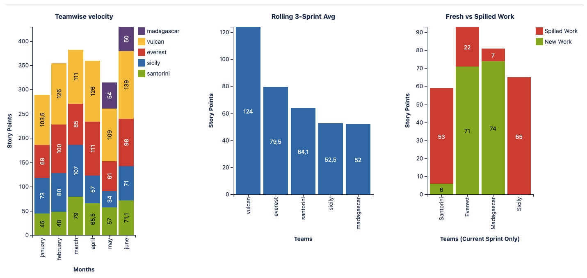
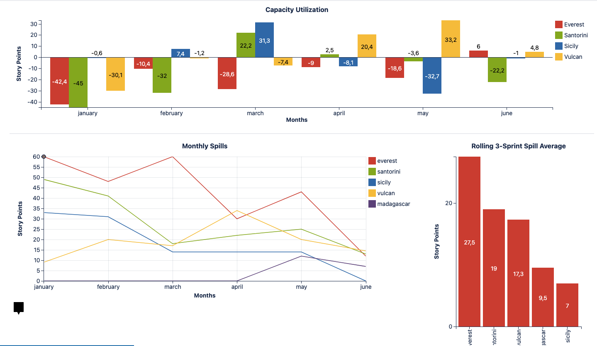
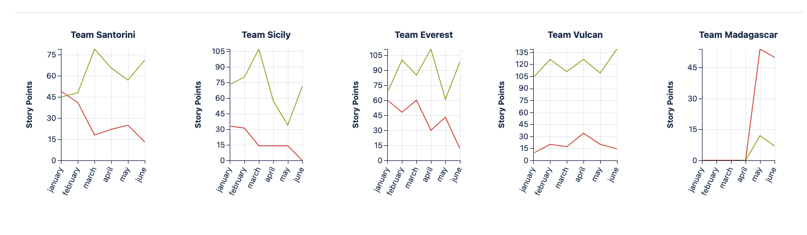

Problem
Five teams inside one value stream each reported velocity and capacity on their own board, in their own format. Comparing performance across the value stream — or spotting which team was chronically overcommitting — meant manually stitching together five separate exports before every planning or leadership review.
Approach
The goal was one rolled-up reporting layer that still preserved a per-team drill-down, rather than forcing a choice between the aggregate view and the team-level detail.
- Standardized how each team's velocity, spillover, and capacity data fed into a shared reporting model
- Built a value-stream-level roll-up alongside a team-by-team breakdown, so leadership sees the whole picture and a Scrum Master can still see their own team's trend
- Used rolling averages, not single-sprint snapshots, so one noisy sprint doesn't distort the read on a team's real trend
Solution
A single dashboard covering three angles on the same underlying data: a stacked teamwise velocity view across the value stream, a rolling 3-sprint average per team to smooth out noise, and a fresh-vs-spilled work split to separate genuine throughput from carried-over work.

A capacity-utilization view tracks each team's plan-vs-actual gap month over month, and a monthly spill trend surfaces which teams are carrying over work rather than closing it — both rolled up with a 3-sprint spill average so a single bad sprint doesn't unfairly flag a team.

Underneath the roll-up, each team still gets its own velocity trendline, so a Scrum Master reviewing their own team isn't stuck reading it out of a value-stream-wide aggregate.

Impact
Planning and leadership reviews now start from one consistent dataset instead of five reconciled exports. Teams with a chronic spillover pattern are visible in the rolled-up view immediately, rather than surfacing only when someone happens to compare boards manually.